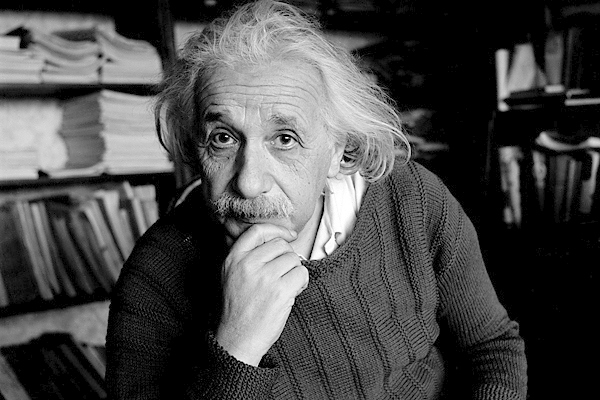
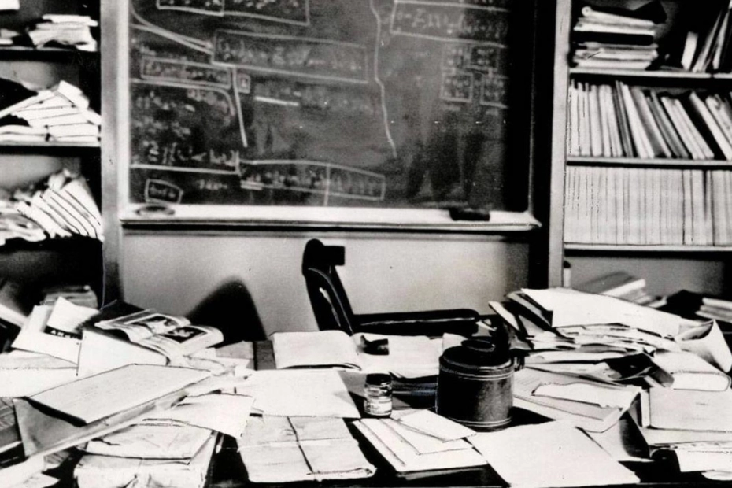

Albert Einstein (1879-1955)
Był to fizyk, twórca szczególnej i ogólnej teorii względności, laureat Nagrody Nobla. Urodził się 14 marca 1879 roku w niemieckim mieście Ulm. Kształcił się w gimnazjum w Monachium,
a do liceum uczęszczał w szwajcarskim Aarau. W latach 1896-1900 studiował na Politechnice Federalnej w Zurychu.
Od 1902 roku pracował w Berneńskim Urzędzie Patentowym; rok później ożenił się z Milevą Marić. Wkrótce na świat przyszedł jego pierwszy syn, Hans Albert.
Przełomowy okazał się dla niego rok 1905. Opublikował wówczas w „Annalen der Physik” trzy artykuły, poświęcone mechanice kwantowej, molekułom i szczegółowej teorii względności. Fizyk Max Born powiedział później, że ten tom roczników jest „jednym z najwybitniejszych tomów w całej naukowej literaturze. Zawiera trzy artykuły Einsteina, każdy poświęcony innemu zagadnieniu i każdy uznany dzisiaj za arcydzieło”.
Publikacja artykułów otworzyła Einsteinowi drzwi do tradycyjnie pojmowanej kariery naukowej. Od 1908 roku uczył w Bernie, Pradze i Zurychu. W 1910 roku urodził się jego drugi syn, Edward. W 1916 roku opublikował kolejny przełomowy tekst, tym razem poświęcony ogólnej teorii względności i grawitacji. Od dwóch lat mieszkał już wówczas w Berlinie, po separacji z Milevą. W 1919 roku doszło do rozwodu, a Einstein ożenił się ponownie, tym razem ze swoją kuzynką, Elsą. W tym samym roku jego ogólna teoria względności została potwierdzona, a on sam z dnia na dzień stał się najbardziej znanym naukowcem na świecie. W 1921 roku otrzymał Nagrodę Nobla. Przyznano ją „za zasługi dla fizyki teoretycznej i odkrycie praw rządzących efektem fotoelektrycznym”.


Słynne zdjęcie zostało zrobione w Princeton w stanie New Jersey w 1955 r. Przedstawia biurko Alberta Einsteina w dniu jego śmierci.